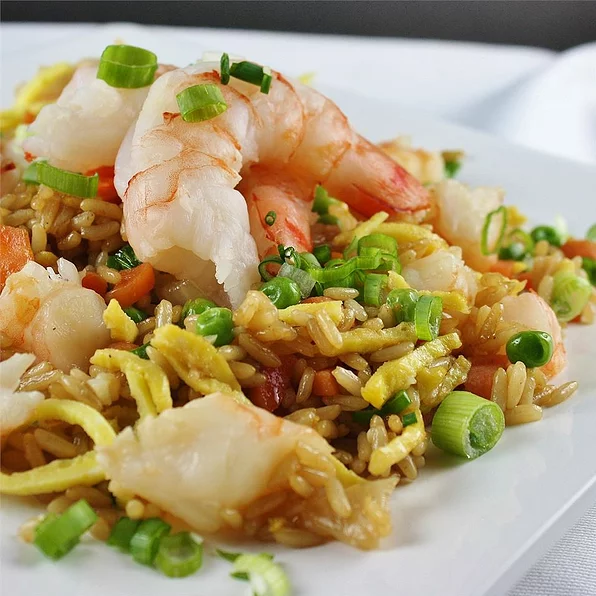

Korean Saewoo Bokkeumbap (Shrimp Fried Rice)

Description
Ever since we lost our good friend Mr.Cuckoo (the name brand of our rice
cooker) a few months ago, we never have any leftover rice (which is ideal
for fried rice) because our new one makes exactly four servings. And since
my futile attempts at fixing Mr.Cuckoo had reached its end, the missus had
to make new rice and let it cool for a few hours. Enjoy this fried rice
with kimchi and other Korean side dishes.
Ingredients
- 2 tablespoons olive oil
- 1 carrot, diced
- ½ green bell pepper, diced
- 2 cups shrimp, peeled and deveined
- ½ onion, diced
- ½ (15.25 ounce) can whole kernel corn, drained
- 2 cloves garlic, thinly sliced
- 1 tablespoon olive oil
- 2 eggs, beaten (Optional)
- 4 cups cooked rice, cooled - or more to taste
- 2 tablespoons oyster sauce, or more to taste
- 2 tablespoons soy sauce
- 1 tablespoon butter
- ½ teaspoon salt
- 1 teaspoon butter, or as needed
- 4 eggs, divided (Optional)
Directions
-
Heat 2 tablespoons olive oil in a large skillet over medium heat and
cook and stir carrot and green bell pepper until slightly softened,
about 5 minutes; stir shrimp, onion, corn, and garlic into carrot
mixture. Cook and stir until shrimp turn pink and are no longer
translucent, 5 more minutes. Pour off any liquid. Turn heat to low and
let mixture simmer.
-
Heat 1 tablespoon olive oil in a separate skillet over medium heat; pour
2 beaten eggs into hot oil and scramble the eggs until firm and no
longer runny, 2 to 3 minutes. Mix scrambled eggs lightly into shrimp and
vegetables.
-
Stir rice, oyster sauce, soy sauce, 1 tablespoon butter, and salt into
shrimp mixture, tossing until rice is thoroughly combined with shrimp
and vegetables and coated with sauce.
-
Heat 1 teaspoon butter in a small nonstick skillet over medium heat
until butter stops foaming; break 1 of the 4 remaining eggs into the hot
butter. Cover skillet and let egg cook until the bottom is slightly
browned, the yolk is runny, and the top of the white is slightly firm,
about 3 minutes. Set egg aside. Repeat with remaining 3 eggs.
-
Serve shrimp fried rice topped with fried eggs. For a nice presentation,
fill a bowl with 1/4 of the fried rice, press lightly to compact, and
turn fried rice out onto a serving plate in a dome shape; top with a
fried egg. Repeat with remaining rice and eggs.